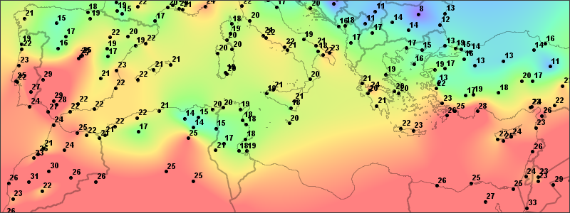

An Introduction to Natural Neighbor Interpolation
Natural-neighbor interpolation is a fast, robust, and reliable technique for reconstructing a surface from irregularly distributed sample points. It faithfully preserves input data values and produces a continuous surface as its output. It also provides good (though not perfect) continuity for slope. The technique is particularly useful for the kinds of unstructured data commonly encountered in geophysical applications where it yields smooth and visually appealing results.
Despite its advantages, the natural-neighbors technique is often overlooked. This article will attempt to help remedy that situation by providing background on the technique, describing its strengths and weaknesses, and giving examples of its application. The method of natural neighbors is one of the main interpolator implementations in the Tinfour software project. It is also provided as a feature of ArcGIS, GRASS GIS, SADA GIS, MATLAB, and other major applications. Some of these systems, such as MATLAB, refer to Natural Neighbor Interpolation as a kind of scattered interpolant and offer it as an option of their scattered interpolant tool sets. Users who wish to gain experience with the technique may do so by exploring these systems.
Figure 1 below illustrates the kind of data processing task at which natural neighbors excels. The numbered points represent surface temperature data collected across the Mediterranean Basin and Northern Africa over a one hour period in October of 2018. When we use the term "unstructured data" for sample sets such as the one shown, we are referring to the fact that there is no identifiable structure in the placement of the sample positions.

To create the figure, I used the Tinfour implementation of